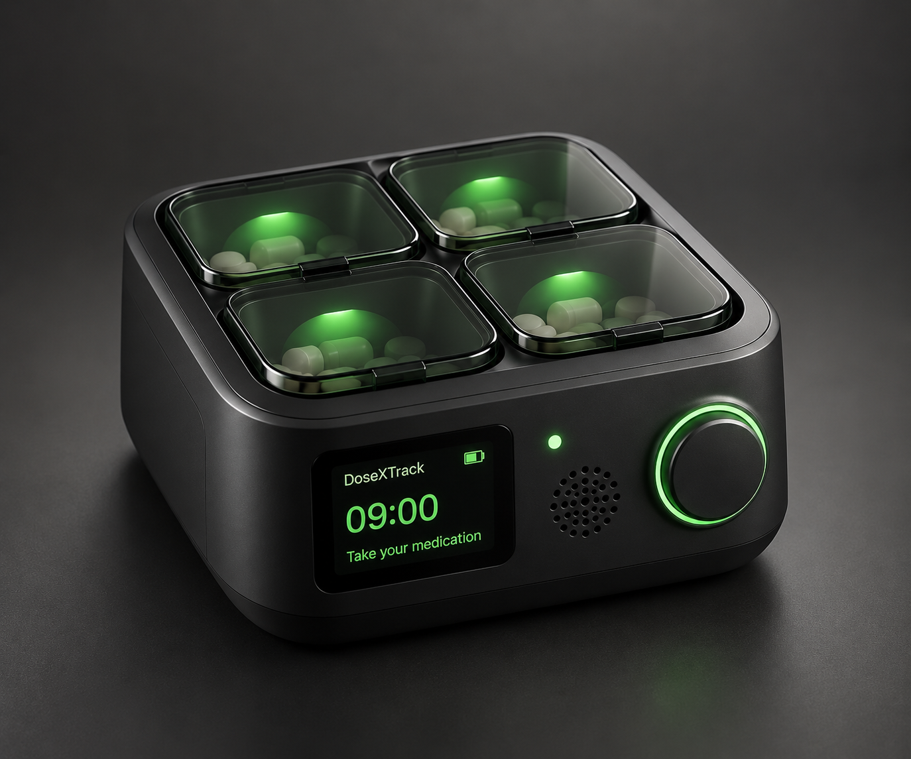
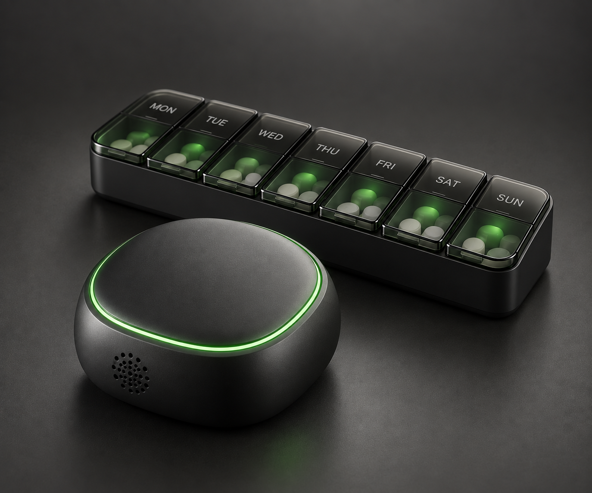

Open experiments where AI meets biology — working hardware builds and exploratory concepts.
This is a living lab notebook, not a commercial catalogue. Where physical code exists, it is open on GitHub; the rest are conceptual frameworks shared in the hope they spark something useful.

A medication-monitoring system pairing an ESP32 dispenser with a web dashboard over MQTT — built, functional, and open-source.

Design renderA battery-powered medication reminder that buzzes when a dose is due and stops when the button is pressed. Set up once from a phone over Bluetooth — no Wi-Fi, no mains power, no app.
A concept for a brain-computer interface that could enable direct neural control of digital devices with low-latency signal processing.
A concept for converting visual, auditory, and tactile information into alternative sensory channels to improve accessibility.
A concept for prosthetics and mobility aids with predictive movement that could learn user patterns and environmental context.
A concept for AI-guided neuroplasticity support — using personalized stimulation patterns to aid neural recovery and cognitive training.
A speculative concept for an edge unit combining quantum annealing principles with neuromorphic computing for low-power inference.
A concept for a self-organizing IoT network with distributed AI, where each node contributes to collective intelligence while keeping local autonomy.
A concept for a multi-modal sensor system with anomaly detection that could flag mechanical failures and environmental shifts early.
A concept for edge-device security combining post-quantum cryptography with AI threat detection for hardened microcontroller channels.
A concept for an intelligent hydroponic controller that monitors plant health and tunes nutrients, pH, and lighting automatically.
A concept for adapting greenhouse conditions in real time from ambient weather models and plant biometrics.
A concept for autonomous drone coordination in precision agriculture — multi-spectral canopy imaging and localized treatment.
A concept for soil analysis using microbiome sequencing to guide targeted, regenerative interventions for long-term soil health.